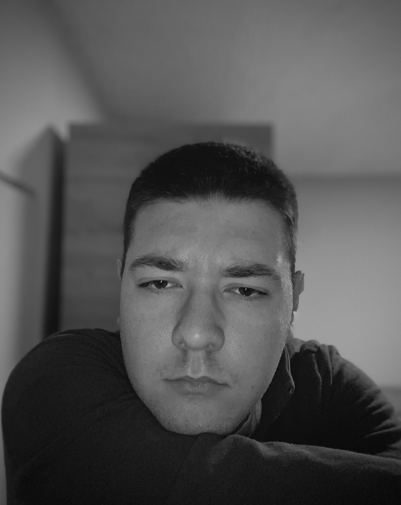

Rođen 11. novembra 2002. godine u Smederevu. Trenutno sam student treće godine na Višoj elektrotehničkoj školi, na smeru Nove računarske tehnologije. Strastveno se bavim web dizajnom i razvojem, uživajući u kreiranju modernih i funkcionalnih digitalnih rešenja. Kroz rad na različitim projektima razvijam svoje veštine, trudeći se da svaki sajt koji napravim bude savršena kombinacija estetike i korisničkog iskustva.
